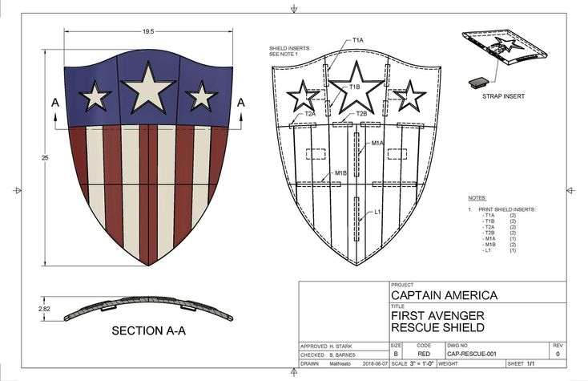

El escudo del Capitán América no siempre fue redondo
En su debut en Captain America Comics #1 (1941), el escudo de Steve Rogers tenía forma triangular, parecido a una insignia. Fue diseñado de esa forma para simbolizar una armadura tradicional, pero este diseño fue rápidamente cambiado debido a conflictos legales con la editorial MLJ Comics (hoy conocida como Archie Comics), que tenía un personaje con un escudo similar.
A partir del número 2, el escudo adoptó su forma redonda icónica, la cual no solo se volvió una herramienta de defensa, sino también un símbolo de los ideales del personaje. Su capacidad de regresar como un boomerang, desviar balas y destruir armas enemigas lo convirtió en una extensión perfecta del Capitán América.
Este cambio estético tuvo consecuencias profundas en la mitología del personaje. El escudo redondo se convirtió en un ícono del heroísmo y la resistencia, incluso representando el legado del personaje cuando otros como Sam Wilson o Bucky Barnes tomaron el manto del Capitán América.
← Volver a curiosidades de Marvel